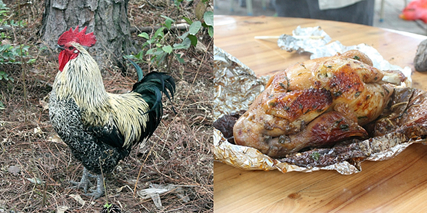

家乡的湛江鸡在广东非常有名。这次回家过年少不了吃鸡，亲戚给我们送的一只味道口感尤其好，毕竟是自己养的。之前在北京住所对面的粤菜酒家吃过的所谓“湛江鸡”，可比这差远了。主要是原材料的差别，像白切鸡，在没有很多酱料调味的情况下还很好吃，鸡肉本身很重要。 湛江有个挺大的森林公园，里面基本也就是树林，没什么太多别的好玩的。但是那里有个最火的项目就是“打鸡瓮”，就是常听说的乞丐鸡那种。用锡纸包裹着配以酱料的鸡，放到高温的土堆里，闷它半小时就熟了。很多年前和同学来的时候没什么人，可以选择让村民帮你打，也可以自己亲手尝试制作。今年回去发现都没有自己亲自“打鸡瓮”的了，全是村民制作。一方面生活水平提高了吧，人也都懒了，许多人都是电话预定好，到点了才开着车来，马上豪吃。另一方面是现在去那吃鸡的人实在太多了，没时间和地方给游客自己一个个来，都是经营者高效制作，一个炉烧十几只鸡，应付众多的游客。 如果有机会到此一游，别忘了试试这的鸡，名不虚传的。
